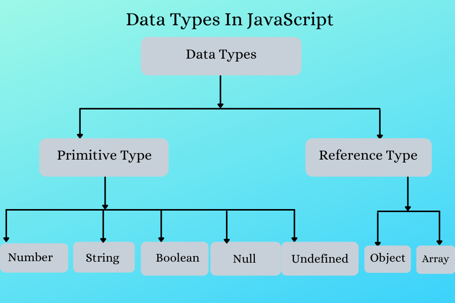

Q1- What is JavaScript. How to use it?
ANS: JavaScript is a scripting language that enables you to create dynamically updating content, control multimedia, animate images, and pretty much everything else.
JavaScript (JS) is a cross-platform, object-oriented programming language used by developers to make web pages interactive. It allows developers to create dynamically updating content, use animations, pop-up menus, clickable buttons, control multimedia, etc.
Q2- How many type of Variable in JavaScript?
ANS: Variables can be used to store data in a program, such as strings, numbers, JSON objects, or boolean values. In JavaScript, there are three different variable types: var , let , and const . Each of these variables have several rules around how they should be used, and have different characteristics
Q3- Define a Data Types in js?
ANS: Data types describe the different types or kinds of data that we're gonna be working with and storing in variables. In Javascript, there are five basic, or primitive, types of data. The five most basic types of data are strings, numbers, booleans, undefined, and null.
Q4- Write a mul Function Which will Work Properly When invoked With Following Syntax.
ANS:
function mul(x) {
return function (y) {
return function (z) {
return x * y * z;
};
};
}
Q5-What the deference between undefined and undeclare in JavaScript?
ANS:
Q6- Using console.log() print out the following statement: The quote 'There is no exercise better for the heart than reaching down and lifting people up.' by John Holmes teaches us to help one another. Using console.log() print out the following quote by Mother Teresa
ANS:
Q7- Check if typeof '10' is exactly equal to 10. If not make it exactly equal
ANS:
let a = 17;
let b = 'ankit';
let c;
let d = null;
let e = true;
let f = BigInt(58);
let g = Symbol("kunal");
console.log(a,b,c,d,e,f,g);
console.log(typeof a);
console.log(typeof b);
console.log(typeof c);
console.log(typeof d);
console.log(typeof e);
console.log(typeof f);
console.log(typeof g);
Q8 Write a JavaScript Program to find the area of a triangle?
ANS:
function calculateTriangleArea(side1, side2, side3) {
// Check if a triangle can be formed with the given sides
if (side1 + side2 <= side3 || side1 + side3 <= side2 || side2 + side3 <= side1) {
return "Invalid triangle sides";
}
const semiPerimeter = (side1 + side2 + side3) / 2;
const area = Math.sqrt(semiPerimeter * (semiPerimeter - side1) * (semiPerimeter - side2) * (semiPerimeter - side3));
return area;
}
const sideA = 5;
const sideB = 6;
const sideC = 7;
const triangleArea = calculateTriangleArea(sideA, sideB, sideC);
console.log("Area of triangle:", triangleArea);
Q9- Write a JavaScript program to calculate days left until next Christmas?
ANS:
let today = new Date();
let christmasYear = today.getFullYear();
if (today.getMonth() == 11 && today.getDate() > 25) {
christmasYear = christmasYear + 1;
}
let christmasDate = new Date(christmasYear, 11, 25);
let dayMilliseconds = 1000 * 60 * 60 * 24;
let remainingDays = Math.ceil(
(christmasDate.getTime() - today.getTime()) /
(dayMilliseconds)
);
Q10- What is Condition Statement?
ANS: Conditional statements, expressions, or simply conditionals are features of programming languages that tell the computer to execute certain actions, provided ...

Q11- Find circumference of Rectangle formula : C = 4 * a ?
ANS:
// Function to calculate the circumference of a rectangle
function calculateRectangleCircumference(length, width) {
return 2 * (length + width);
}
// Example
var length = 8; // Replace with the actual length of the rectangle
var width = 3; // Replace with the actual width of the rectangle
var circumference = calculateRectangleCircumference(length, width);
console.log("Circumference of the rectangle:", circumference);
Q12- WAP to convert years into days and days into years?
ANS:
function convert() {
const years = parseInt(document.getElementById("years").value);
const days = parseInt(document.getElementById("days").value);
let result = "";
if (!isNaN(years)) {
daysInYear = 365; // Assuming non-leap year
result += years + " years is equal to " + (years * daysInYear) + " days.";
} else if (!isNaN(days)) {
result += days + " days is equal to " + Math.floor(days / daysInYear) + " years and " + (days % daysInYear) + " days.";
} else {
result = "Please enter a valid number of years or days.";
}
document.getElementById("result").innerHTML = result;
}